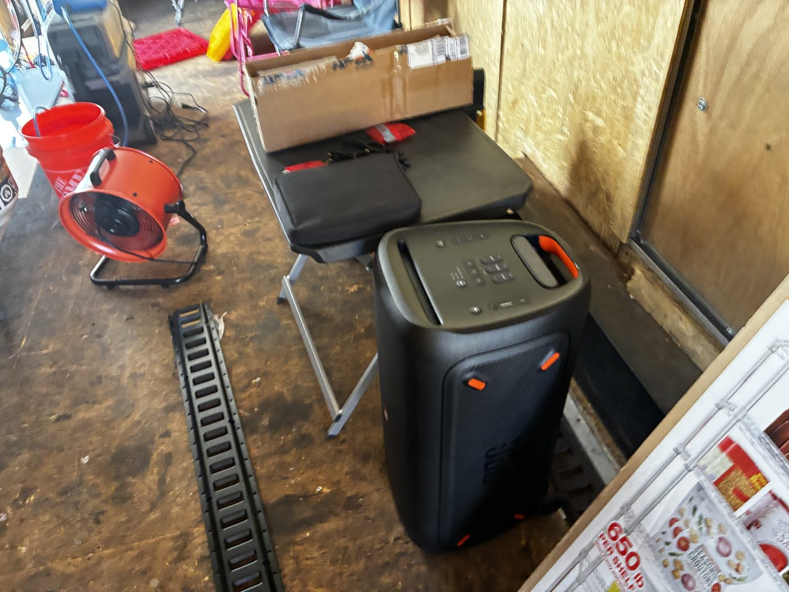
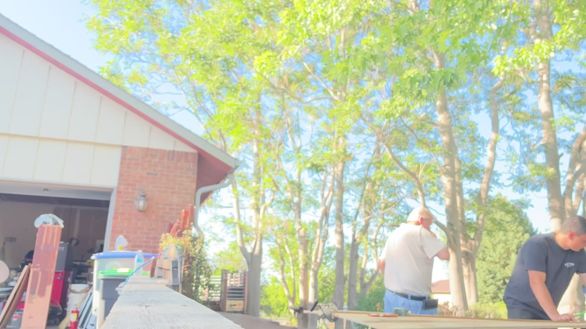
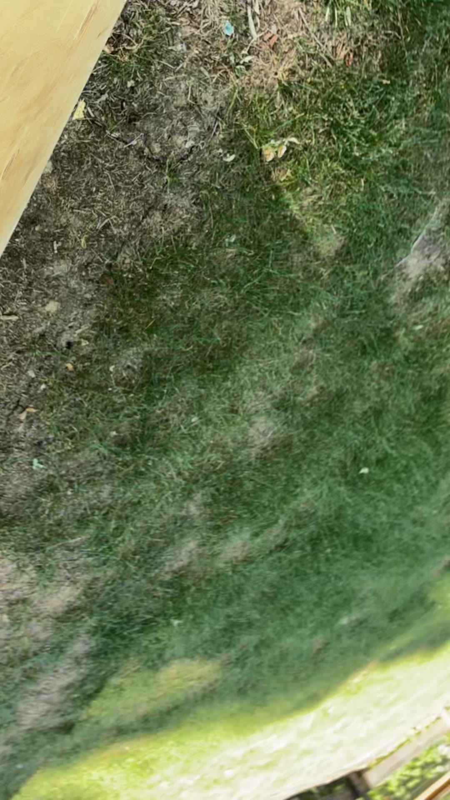
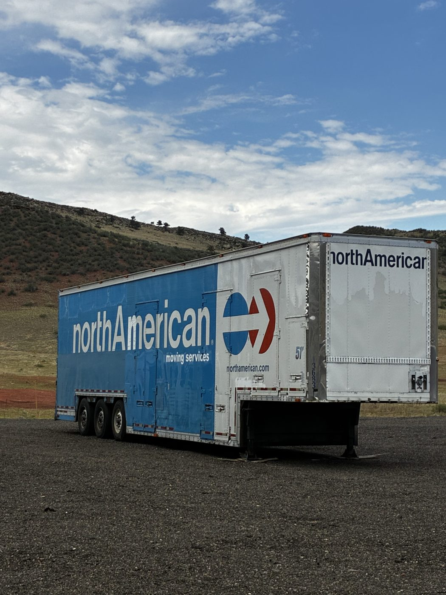
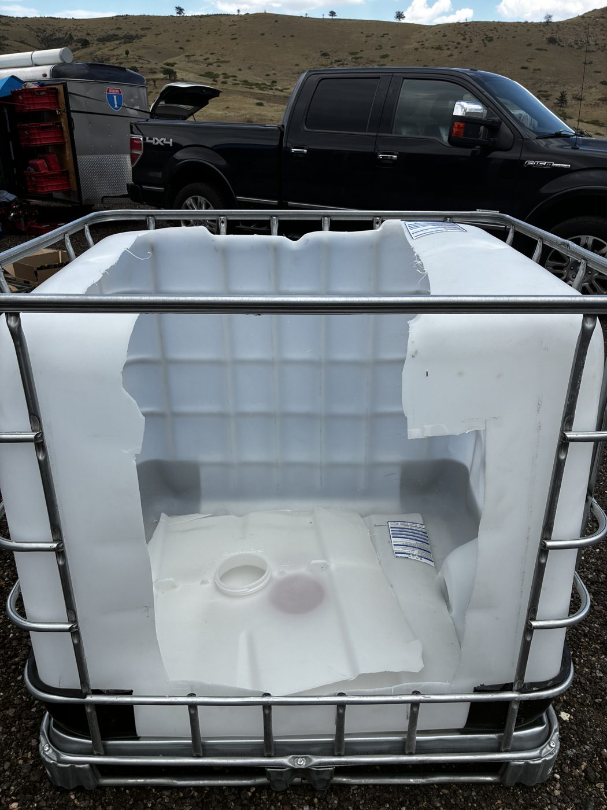
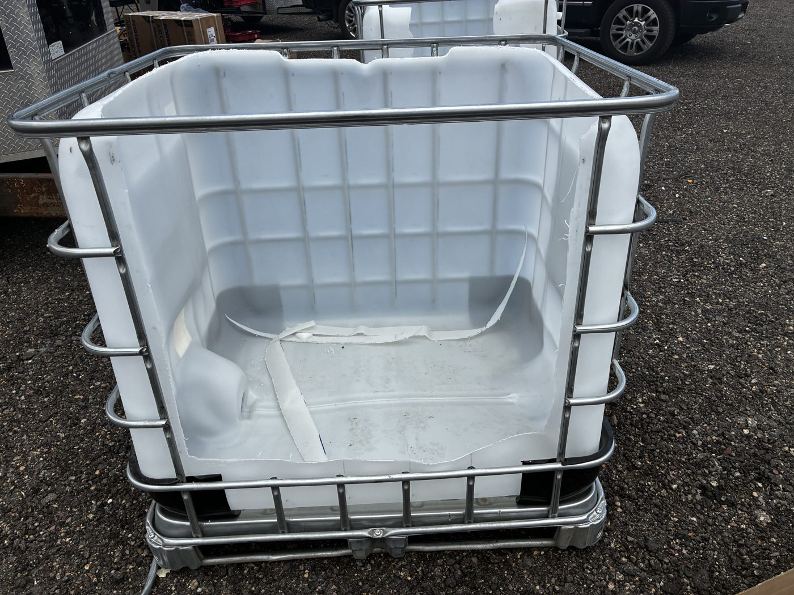
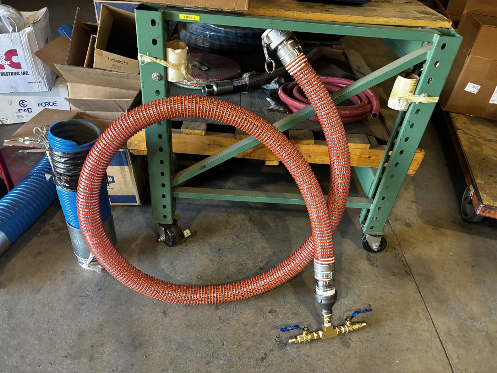

🐢 The Show & Tell Shell
The build, unfolding in pictures and timestamps — filmed by the crew at Phoenix Gulch, transcribed by the ShellPit, told by Terri. New stops appear as the camp builds.
🔧 MACHINE GUIDANCE
Jarred "The Machine" Henson
A master electrician's kid who welds, lays keder rail, and wires whole trailers. Introduced to David on the 7/16 sync — they clicked instantly — and on-site at Phoenix Gulch the weeks of 7/20 and 7/28. Name honesty: he appears as Jarrett in the 7/16 meeting transcript and Jared in the 7/28 footage; Shaka writes Jarred. Same human. One Machine.
🏷️ The Naming — and the shower RUNS


Nineteen seconds of pure victory: water flowing through the shower The Machine plumbed — and the exact moment the camp gave him his name, on tape.
⚡ The Trailer, Machinified


The Machine's full electrical tour of the kitchen trailer — two minutes of astonishment, and every number is on tape:
- 🔀 Transfer switch with generator kill — "something bad happens, we can kill that" — one click and you're on wall power.
- 🔋 Red rotary battery selector, labeled PANEL / OFF — the lights tell you which mode you're in.
- 🔌 USB + USB-C charge points right at the panel.
- 🔌 16 outlets throughout the entire trailer — plug anything in, anywhere.
- ⚡ 30 amps on both sides.
- 🏠 "This can be a whole house" — this little house, a lot of turtles in the desert.
💧 The Water Loop, End to End


A complete runbook, taught slow on purpose — for the day Jeremy gets back and wants to hook the water up and test everything:
- Wrap the threads with thread-seal tape; screw on the fitting.
- Tighten with channel locks.
- Slide the cam-lock on.
- Plug in — you can hear the pump start immediately.
- Water runs through the orange line to the transfer pump — and all the way around to the kitchen.
- Jeremy's foot switch (jumped into the greywater line) → greywater tank fills to the float switch → sump pump activates → pumps to the shower.
- The shower basin's float switch → all the water pumps back to the greywater tank. Zero spills.
🧠 How The Machine Thinks — from the 7/16 David sync
The Machine was a primary speaker at the July 16 meeting. Four moments that teach infrastructure on their own:
Parts with a pulse
E-track for the kitchen trailer, the 650-lb shelving still in its box, a shop fan — and in the corner, a keyboard and a speaker with wheels. The Open Source Orchestra cleared its throat before the first board was cut.

"Cut right on the line"
Sixteen clips from three long evenings: a grinder used as a saw (it smoked — "we almost built a fire"), the near-miss with a metal sawhorse, and a father teaching the cut that finally came out smooth. The veggie coffin's floor and walls went up — "glued and screwed" — and the kitchen trailer got its e-track, tables, and burners.


51 feet of anchor
The northAmerican trailer — the anchor of the whole camp layout, the wall the Himalayas shade flies from — rolled into Phoenix Gulch and settled against the hills. The map in the playbook is now a place in the world.

The shower pods take shape
Two IBC totes, cage intact, exactly as designed: one with its top cut clean away, one with the doorway opening. Stacked open-to-open, these become the shower stall that stands on the troughs — containment first, plumbing second.


David's spec, made real
From the hydraulic hose shop: a 2-inch orange suction line, cam-lock at the top, stepping down to a brass manifold with two ball valves — exactly the fitting chain drawn up in the July syncs. The parts cascade is nearly complete.

"That's a shower right there"
The trailer got Machinified — transfer switch, panel and battery modes, 16 outlets, 30 amps on both sides — and the full water loop ran: pump to kitchen, foot switch to greywater, float switches carrying water to the shower and back. Two float switches, one foot switch, zero spills.